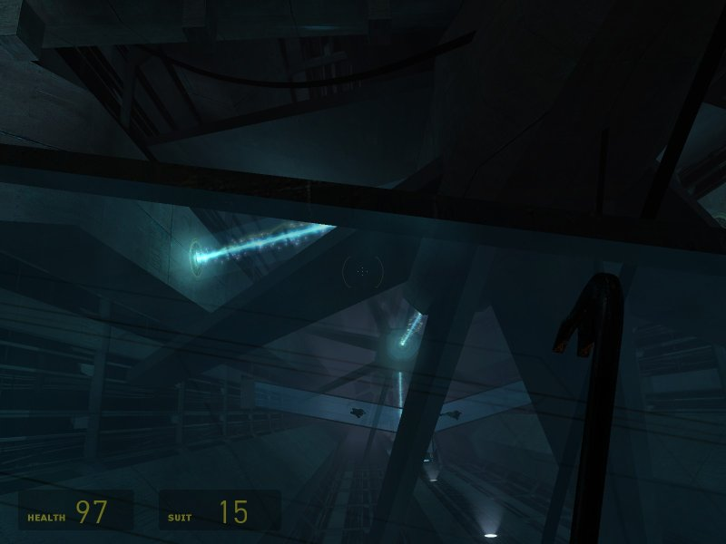

Minerva: Metastasis
PC, Mod of Half-Life 2. By Adam Foster, 2006. 
 ]
]
So the digital ink is barely dry on my assertions that videogames have problems telling a story, when what should fall into my lap but one of those rare and immaculate counter-examples to shut me right up. Minerva: Metastatis is a bedroom-coded Half-Life 2 (HL2) mod that develops a storyline set within the HL2 universe, a new thread in the tale of the alien Combine's invasion of Earth. It has been three years in the making, and it's bloody brilliant.

The baseline HL2 gameplay is not changed one iota. Metastasis eschews the normal stock-in-trade of the mod scene, introducing no new enemies, no new weapons, no new assets such as bitmaps or sound effects. Instead, it envelops the player in an enthralling atmospheric experience, with a compelling backstory and superb player motivation, using a sublime combination of architecture, geometric composition, intensely creative injected textual fragments and well-considered use of music. This is backed up by the superbly crafted accompanying website, that does its best to misinform and manipulate, drawing upon the best of various alternate reality game influences.

The game opens with your character dumped unceremoniously out of a helicopter by forces unknown, onto a beach under hostile fire. Running for cover is the only option. Once out of immediate danger, your plight is revealed in stages by a series of messages squirted onto your protective suit's HUD by some agency identifying themselves as Minerva, as in the Roman Goddess of crafts and wisdom, a.k.a, as Stephenson would have it, the Goddess of technology. Minerva's communications are enigmatic and aloof. You are being used as her sentient reconnaissance tool, your experiences relayed back to her remote location, that she might investigate a small island, and its role in the Combine's occupation.

The island plays host to the usual menagerie of HL2 critters, and visible at its centre is a mysterious plasma discharge, which Minerva prompts you to investigate. Clambering down, underground, you discover the crumbling remains of old WWII fortifications, now housing the twisted, unearthly technology of the Combine's invading forces. From there on, things only get stranger and larger by degrees, until the moment when even Minerva's cool begins to break, and you are left feeling very much like an ant in a nuclear power station, with little option but to continue exploring until the exterminators show up.
It's short and sweet - I played through the first and second parts in a single night. But it's managed with such finesse, extending the backstory of HL2 in bold new directions, building upon what was indubitably the greatest PC game of 2005, possibly of all time, with such verve and imagination that I have to agree with a Metastasis forum posting: It might just be (whisper it) better than the source.
Rating: 10/10. Bring on the third and final instalment, due later this month...